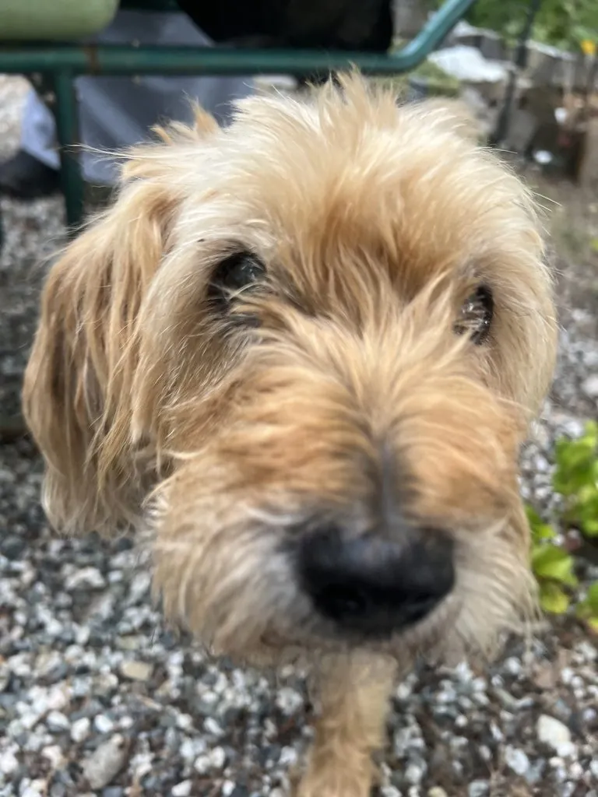

真菌 · 真菌界
粗球孢子菌 Coccidioides immitis

双相型真菌，菌落白色棉絮状，吸入干燥土壤中的关节孢子可致球孢子菌病（山谷热），实验室风险极高。
- 分类
- 门子囊菌门纲散囊菌纲目散囊菌目科阿耶罗菌科属球孢子菌属
- 栖息环境
- 干旱半干旱地区的表层土壤，沙尘天气后孢子易飞扬
- 地理分布
- 美国西南部、墨西哥为主，中南美洲有分布，中国少见输入病例
- 保护级别
- 暂无评估；作为高致病环境病原存在
物种志
粗球孢子菌为双相型真菌：室温下呈菌丝相，菌落白色至淡黄、棉絮状，菌丝成熟后形成桶状关节孢子，孢子间有间隔，极易随气流散播；人体温度下形成球形球体，内含内孢子，球体破裂后释放内孢子扩散。
粗球孢子菌存在于美国西南部、墨西哥等干旱半干旱地区的表层土壤中，是著名的“山谷热”病原。人吸入被风扬起的关节孢子后，多数无症状或呈流感样表现，部分出现咳嗽、胸痛、皮疹，少数可发展为慢性肺病或播散至脑膜、骨骼。它对实验室人员感染力极强，培养与操作需在生物安全三级实验室进行。防治以减少沙尘暴露、疫区户外戴口罩为主，不可擅自处理可疑培养物。
形态与习性
- 菌落菌丝相白色棉絮状，产桶状关节孢子
- 双相性体内形成球体，内含内孢子
- 来源干旱地区表层土壤，随风扬尘传播
- 临床表现流感样症状，少数慢性肺病或播散
- 实验室风险关节孢子极易吸入，需生物安全三级
- 防治疫区防风沙、戴口罩，规范抗真菌治疗
趣味知识
- 它的关节孢子像一串小桶，被风扬起后极易被吸入，感染力极强。
- “山谷热”就是球孢子菌病，在美国西南部每年报告数千例。
- 实验室培养时孢子可随气流扩散，因此必须在生物安全三级实验室操作。
- 多数感染者能自愈，但少数会播散到脑膜，需要长期抗真菌治疗。